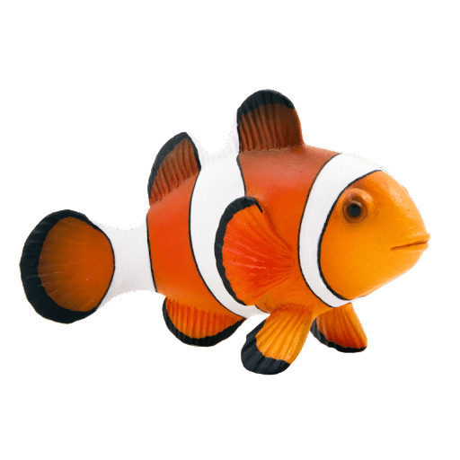

Species: Clownfish
Home: Great Barrier Reef
Clownfish are usually found in warm waters and live in anemone.
Clownfish eggs are guarded by the parent until they hatch.
They are all born male and whhen they turn female they can never go back to being male.
Male clownfish, like Nemo's father Marlin, are the primary caretakers and the female fish only help ocassionally.
Clownfish communicate by making popping and clicking noises.